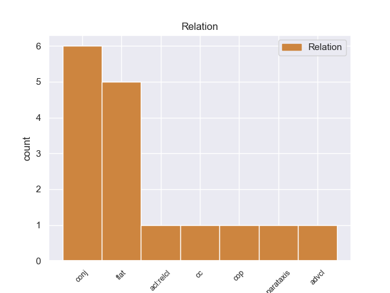
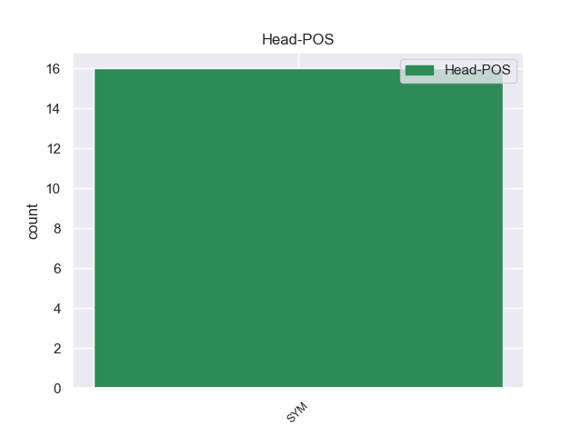
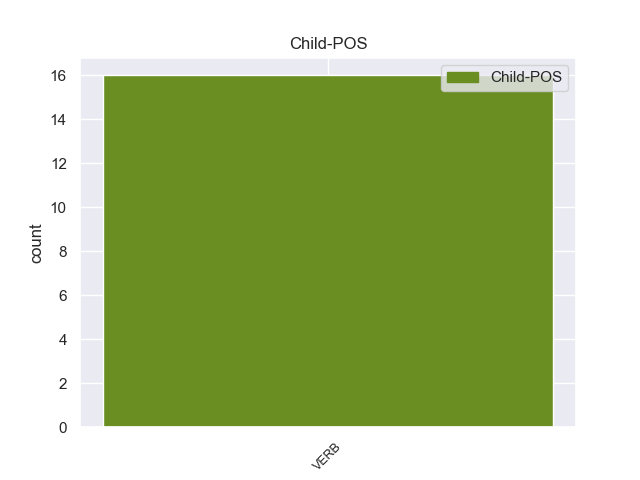

Distribution of features within this leaf



Morphosyntax Rules sorted by frequency.
- When the dependent token is the conjunct(conj) of the head token, and the head token is SYM and the dependent token is VERB, the Tense needs to be Imp.
1 De _ _ _ _ 0 _ _ _
2 los _ _ _ _ 0 _ _ _
3 587 _ _ _ _ 0 _ _ _
4 habitantes _ _ _ _ 0 _ _ _
5 , _ _ _ _ 0 _ _ _
6 Salt _ _ _ _ 0 _ _ _
7 Creek _ _ _ _ 0 _ _ _
8 estaba _ _ _ _ 0 _ _ _
9 compuesto _ _ _ _ 0 _ _ _
10 por _ _ _ _ 0 _ _ _
11 el _ _ _ _ 0 _ _ _
12 67.29 _ _ _ _ 0 _ _ _
13 % % SYM _ _ 0 _ _ _
14 blancos _ _ _ _ 0 _ _ _
15 , _ _ _ _ 0 _ _ _
16 el _ _ _ _ 0 _ _ _
17 0 _ _ _ _ 0 _ _ _
18 % _ _ _ _ 0 _ _ _
19 eran _ _ _ _ 0 _ _ _
20 afroamericanos _ _ _ _ 0 _ _ _
21 , _ _ _ _ 0 _ _ _
22 el _ _ _ _ 0 _ _ _
23 4.09 _ _ _ _ 0 _ _ _
24 % _ _ _ _ 0 _ _ _
25 eran _ _ _ _ 0 _ _ _
26 amerindios _ _ _ _ 0 _ _ _
27 , _ _ _ _ 0 _ _ _
28 el _ _ _ _ 0 _ _ _
29 0 _ _ _ _ 0 _ _ _
30 % _ _ _ _ 0 _ _ _
31 eran _ _ _ _ 0 _ _ _
32 asiáticos _ _ _ _ 0 _ _ _
33 , _ _ _ _ 0 _ _ _
34 el _ _ _ _ 0 _ _ _
35 0 _ _ _ _ 0 _ _ _
36 % _ _ _ _ 0 _ _ _
37 eran _ _ _ _ 0 _ _ _
38 isleños _ _ _ _ 0 _ _ _
39 de _ _ _ _ 0 _ _ _
40 el _ _ _ _ 0 _ _ _
41 Pacífico _ _ _ _ 0 _ _ _
42 , _ _ _ _ 0 _ _ _
43 el _ _ _ _ 0 _ _ _
44 26.41 _ _ _ _ 0 _ _ _
45 % _ _ _ _ 0 _ _ _
46 eran _ _ _ _ 0 _ _ _
47 de _ _ _ _ 0 _ _ _
48 otras _ _ _ _ 0 _ _ _
49 razas _ _ _ _ 0 _ _ _
50 y _ _ _ _ 0 _ _ _
51 el _ _ _ _ 0 _ _ _
52 2.21 _ _ _ _ 0 _ _ _
53 % _ _ _ _ 0 _ _ _
54 pertenecían pertenecer VERB _ Mood=Ind|Number=Plur|Person=3|Tense=Imp|VerbForm=Fin 13 conj _ _
55 a _ _ _ _ 0 _ _ _
56 dos _ _ _ _ 0 _ _ _
57 o _ _ _ _ 0 _ _ _
58 más _ _ _ _ 0 _ _ _
59 razas _ _ _ _ 0 _ _ _
60 . _ _ _ _ 0 _ _ _
1 De _ _ _ _ 0 _ _ _
2 los _ _ _ _ 0 _ _ _
3 616 _ _ _ _ 0 _ _ _
4 habitantes _ _ _ _ 0 _ _ _
5 , _ _ _ _ 0 _ _ _
6 Belmont _ _ _ _ 0 _ _ _
7 estaba _ _ _ _ 0 _ _ _
8 compuesto _ _ _ _ 0 _ _ _
9 por _ _ _ _ 0 _ _ _
10 el _ _ _ _ 0 _ _ _
11 97.4 _ _ _ _ 0 _ _ _
12 % _ _ _ _ 0 _ _ _
13 blancos _ _ _ _ 0 _ _ _
14 , _ _ _ _ 0 _ _ _
15 el _ _ _ _ 0 _ _ _
16 0 _ _ _ _ 0 _ _ _
17 % _ _ _ _ 0 _ _ _
18 eran _ _ _ _ 0 _ _ _
19 afroamericanos _ _ _ _ 0 _ _ _
20 , _ _ _ _ 0 _ _ _
21 el _ _ _ _ 0 _ _ _
22 0.49 _ _ _ _ 0 _ _ _
23 % _ _ _ _ 0 _ _ _
24 eran _ _ _ _ 0 _ _ _
25 amerindios _ _ _ _ 0 _ _ _
26 , _ _ _ _ 0 _ _ _
27 el _ _ _ _ 0 _ _ _
28 0 _ _ _ _ 0 _ _ _
29 % _ _ _ _ 0 _ _ _
30 eran _ _ _ _ 0 _ _ _
31 asiáticos _ _ _ _ 0 _ _ _
32 , _ _ _ _ 0 _ _ _
33 el _ _ _ _ 0 _ _ _
34 0 _ _ _ _ 0 _ _ _
35 % _ _ _ _ 0 _ _ _
36 eran _ _ _ _ 0 _ _ _
37 isleños _ _ _ _ 0 _ _ _
38 de _ _ _ _ 0 _ _ _
39 el _ _ _ _ 0 _ _ _
40 Pacífico _ _ _ _ 0 _ _ _
41 , _ _ _ _ 0 _ _ _
42 el _ _ _ _ 0 _ _ _
43 1.62 _ _ _ _ 0 _ _ _
44 % % SYM _ _ 0 _ _ _
45 eran ser VERB _ Mood=Ind|Number=Plur|Person=3|Tense=Imp|VerbForm=Fin 44 flat _ _
46 de _ _ _ _ 0 _ _ _
47 otras _ _ _ _ 0 _ _ _
48 razas _ _ _ _ 0 _ _ _
49 y _ _ _ _ 0 _ _ _
50 el _ _ _ _ 0 _ _ _
51 0.49 _ _ _ _ 0 _ _ _
52 % _ _ _ _ 0 _ _ _
53 pertenecían _ _ _ _ 0 _ _ _
54 a _ _ _ _ 0 _ _ _
55 dos _ _ _ _ 0 _ _ _
56 o _ _ _ _ 0 _ _ _
57 más _ _ _ _ 0 _ _ _
58 razas _ _ _ _ 0 _ _ _
59 . _ _ _ _ 0 _ _ _
non-conforming Examples:
1 Este _ _ _ _ 0 _ _ _
2 hecho _ _ _ _ 0 _ _ _
3 se _ _ _ _ 0 _ _ _
4 explica _ _ _ _ 0 _ _ _
5 por _ _ _ _ 0 _ _ _
6 el _ _ _ _ 0 _ _ _
7 nivel _ _ _ _ 0 _ _ _
8 de _ _ _ _ 0 _ _ _
9 estudios _ _ _ _ 0 _ _ _
10 , _ _ _ _ 0 _ _ _
11 que _ _ _ _ 0 _ _ _
12 oscila _ _ _ _ 0 _ _ _
13 entre _ _ _ _ 0 _ _ _
14 el _ _ _ _ 0 _ _ _
15 27,76 _ _ _ _ 0 _ _ _
16 % _ _ _ _ 0 _ _ _
17 con _ _ _ _ 0 _ _ _
18 titulación _ _ _ _ 0 _ _ _
19 superior _ _ _ _ 0 _ _ _
20 , _ _ _ _ 0 _ _ _
21 a _ _ _ _ 0 _ _ _
22 el _ _ _ _ 0 _ _ _
23 16,49 _ _ _ _ 0 _ _ _
24 % _ _ _ _ 0 _ _ _
25 con _ _ _ _ 0 _ _ _
26 estudios _ _ _ _ 0 _ _ _
27 básicos _ _ _ _ 0 _ _ _
28 , _ _ _ _ 0 _ _ _
29 pasando _ _ _ _ 0 _ _ _
30 por _ _ _ _ 0 _ _ _
31 el _ _ _ _ 0 _ _ _
32 grueso _ _ _ _ 0 _ _ _
33 de _ _ _ _ 0 _ _ _
34 el _ _ _ _ 0 _ _ _
35 55,75 _ _ _ _ 0 _ _ _
36 % % SYM _ _ 0 _ _ _
37 , _ _ _ _ 0 _ _ _
38 que _ _ _ _ 0 _ _ _
39 tiene tener VERB _ Mood=Ind|Number=Sing|Person=3|Tense=Pres|VerbForm=Fin 36 acl:relcl _ _
40 estudios _ _ _ _ 0 _ _ _
41 secundarios _ _ _ _ 0 _ _ _
42 . _ _ _ _ 0 _ _ _
1 Posee _ _ _ _ 0 _ _ _
2 un _ _ _ _ 0 _ _ _
3 clima _ _ _ _ 0 _ _ _
4 tropical _ _ _ _ 0 _ _ _
5 lluvioso _ _ _ _ 0 _ _ _
6 muy _ _ _ _ 0 _ _ _
7 cálido _ _ _ _ 0 _ _ _
8 , _ _ _ _ 0 _ _ _
9 su _ _ _ _ 0 _ _ _
10 temperatura _ _ _ _ 0 _ _ _
11 media _ _ _ _ 0 _ _ _
12 es ser VERB _ Mood=Ind|Number=Sing|Person=3|Tense=Pres|VerbForm=Fin 15 cc _ _
13 de _ _ _ _ 0 _ _ _
14 28 _ _ _ _ 0 _ _ _
15 ° ° SYM _ _ 0 _ _ _
16 C _ _ _ _ 0 _ _ _
17 , _ _ _ _ 0 _ _ _
18 alta _ _ _ _ 0 _ _ _
19 humedad _ _ _ _ 0 _ _ _
20 relativa _ _ _ _ 0 _ _ _
21 ( _ _ _ _ 0 _ _ _
22 superior _ _ _ _ 0 _ _ _
23 a _ _ _ _ 0 _ _ _
24 el _ _ _ _ 0 _ _ _
25 75 _ _ _ _ 0 _ _ _
26 % _ _ _ _ 0 _ _ _
27 ) _ _ _ _ 0 _ _ _
28 y _ _ _ _ 0 _ _ _
29 gran _ _ _ _ 0 _ _ _
30 cantidad _ _ _ _ 0 _ _ _
31 de _ _ _ _ 0 _ _ _
32 precipitaciones _ _ _ _ 0 _ _ _
33 pluviales _ _ _ _ 0 _ _ _
34 . _ _ _ _ 0 _ _ _
1 El _ _ _ _ 0 _ _ _
2 segmento _ _ _ _ 0 _ _ _
3 Kottappuram _ _ _ _ 0 _ _ _
4 - _ _ _ _ 0 _ _ _
5 Kollam _ _ _ _ 0 _ _ _
6 de _ _ _ _ 0 _ _ _
7 el _ _ _ _ 0 _ _ _
8 sistema _ _ _ _ 0 _ _ _
9 de _ _ _ _ 0 _ _ _
10 canales _ _ _ _ 0 _ _ _
11 de _ _ _ _ 0 _ _ _
12 la _ _ _ _ 0 _ _ _
13 costa _ _ _ _ 0 _ _ _
14 oeste _ _ _ _ 0 _ _ _
15 tiene _ _ _ _ 0 _ _ _
16 un _ _ _ _ 0 _ _ _
17 tramo _ _ _ _ 0 _ _ _
18 importante _ _ _ _ 0 _ _ _
19 que _ _ _ _ 0 _ _ _
20 pasa _ _ _ _ 0 _ _ _
21 por _ _ _ _ 0 _ _ _
22 el _ _ _ _ 0 _ _ _
23 lago _ _ _ _ 0 _ _ _
24 Vembanad _ _ _ _ 0 _ _ _
25 y _ _ _ _ 0 _ _ _
26 se _ _ _ _ 0 _ _ _
27 extiende extender VERB _ Mood=Ind|Number=Sing|Person=3|Tense=Pres|VerbForm=Fin 32 cop _ _
28 un _ _ _ _ 0 _ _ _
29 total _ _ _ _ 0 _ _ _
30 de _ _ _ _ 0 _ _ _
31 209 _ _ _ _ 0 _ _ _
32 km km SYM _ Gender=Masc 0 _ _ _
33 . _ _ _ _ 0 _ _ _
1 El _ _ _ _ 0 _ _ _
2 condado _ _ _ _ 0 _ _ _
3 posee _ _ _ _ 0 _ _ _
4 un _ _ _ _ 0 _ _ _
5 área _ _ _ _ 0 _ _ _
6 de _ _ _ _ 0 _ _ _
7 1.482 _ _ _ _ 0 _ _ _
8 km km SYM _ _ 0 _ _ _
9 ² _ _ _ _ 0 _ _ _
10 ( _ _ _ _ 0 _ _ _
11 los _ _ _ _ 0 _ _ _
12 cuales _ _ _ _ 0 _ _ _
13 4 _ _ _ _ 0 _ _ _
14 km _ _ _ _ 0 _ _ _
15 ² _ _ _ _ 0 _ _ _
16 están estar VERB _ Mood=Ind|Number=Plur|Person=3|Tense=Pres|VerbForm=Fin 8 parataxis _ _
17 cubiertos _ _ _ _ 0 _ _ _
18 de _ _ _ _ 0 _ _ _
19 agua _ _ _ _ 0 _ _ _
20 ) _ _ _ _ 0 _ _ _
21 , _ _ _ _ 0 _ _ _
22 una _ _ _ _ 0 _ _ _
23 población _ _ _ _ 0 _ _ _
24 de _ _ _ _ 0 _ _ _
25 10.724 _ _ _ _ 0 _ _ _
26 habitantes _ _ _ _ 0 _ _ _
27 , _ _ _ _ 0 _ _ _
28 y _ _ _ _ 0 _ _ _
29 la _ _ _ _ 0 _ _ _
30 densidad _ _ _ _ 0 _ _ _
31 de _ _ _ _ 0 _ _ _
32 población _ _ _ _ 0 _ _ _
33 es _ _ _ _ 0 _ _ _
34 de _ _ _ _ 0 _ _ _
35 7 _ _ _ _ 0 _ _ _
36 hab _ _ _ _ 0 _ _ _
37 / _ _ _ _ 0 _ _ _
38 km _ _ _ _ 0 _ _ _
39 ² _ _ _ _ 0 _ _ _
40 ( _ _ _ _ 0 _ _ _
41 según _ _ _ _ 0 _ _ _
42 censo _ _ _ _ 0 _ _ _
43 nacional _ _ _ _ 0 _ _ _
44 de _ _ _ _ 0 _ _ _
45 2000 _ _ _ _ 0 _ _ _
46 ) _ _ _ _ 0 _ _ _
47 . _ _ _ _ 0 _ _ _
1 Un _ _ _ _ 0 _ _ _
2 60 _ _ _ _ 0 _ _ _
3 % _ _ _ _ 0 _ _ _
4 de _ _ _ _ 0 _ _ _
5 los _ _ _ _ 0 _ _ _
6 110 _ _ _ _ 0 _ _ _
7 millones _ _ _ _ 0 _ _ _
8 de _ _ _ _ 0 _ _ _
9 votantes _ _ _ _ 0 _ _ _
10 aptos _ _ _ _ 0 _ _ _
11 participó _ _ _ _ 0 _ _ _
12 en _ _ _ _ 0 _ _ _
13 las _ _ _ _ 0 _ _ _
14 elecciones _ _ _ _ 0 _ _ _
15 , _ _ _ _ 0 _ _ _
16 un _ _ _ _ 0 _ _ _
17 descenso _ _ _ _ 0 _ _ _
18 con _ _ _ _ 0 _ _ _
19 respecto _ _ _ _ 0 _ _ _
20 a _ _ _ _ 0 _ _ _
21 el _ _ _ _ 0 _ _ _
22 64 _ _ _ _ 0 _ _ _
23 % % SYM _ _ 0 _ _ _
24 de _ _ _ _ 0 _ _ _
25 hace hacer VERB _ Mood=Ind|Number=Sing|Person=3|Tense=Pres|VerbForm=Fin 23 advcl _ _
26 cuatro _ _ _ _ 0 _ _ _
27 años _ _ _ _ 0 _ _ _
28 . _ _ _ _ 0 _ _ _